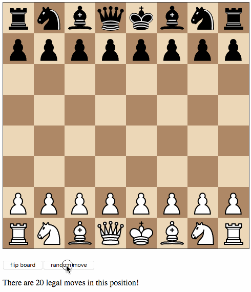

Twelve Days of Christmas #2
This is the second part of a chess-themed tutorial on writing an SPA in Bucklescript-TEA. After this part, your app will look similar to this demo.
Yesterday, we implemented a chessboard without pieces. Today, we will add pieces and use a random number generator to play random moves. We use an existing OCaml chess library to do the heavy lifting.
Integrating existing OCaml code
Just like Google's recent success with AlphaZero, we will only need to
spell out the rules of chess, and our program will learn how to
display the chessboard and play against itself. That's it, folks! See
you next time! Well… that would be nice, but last time I checked, no
neural network was able to write frontend code. That might change, but
for now we still have to invest some human labour. At least we can
save a few hours of work by pulling in a decent chess library.
Bucklescript integrates with NPM as well as OPAM, but I didn't find
any open-source implementation of chess that I liked on either, not
even on Github for that matter, so I decided to use good old
MIT-licensed O'Chess by Oleg Trott. Just download the file
ochess.ml, drop it into your src directory and add it to version
control. O'Chess is
actually a full-fledged chess engine, but we are only interested in the rule logic.
Let's make use of the fact that O'Chess defines a color type just like we did and replace our type definition by:
type color = Ochess.color
Save the file, and the build script will yell at you:
We've found a bug for you! /Users/daniel/Playground/tea-chess/src/ochess.ml 43:6-8 41 │ open Printf 42 │ open Sys 43 │ open Str 44 │ 45 │ (* The module or file Str can't be found.
This is because Bucklescript differs from the standard OCaml
distribution in a few ways; it doesn't contain the Str module.
Fortunately, this only affects a small portion of the code, and is easily remedied by providing our own function to split a string. While I was at it, I got rid of all the warnings by prefixing all unused variables with _ and by replacing or with ||. I also disabled the main function of O'Chess to prevent it from being evaluated automatically. You can get my updated ochess.ml from my repository.
Let's add a file src/Chess.ml that wraps O'Chess and adds all chess-related helper functions that we may come up with:
include Ochess let char_of_file file = "abcdefgh".[file] let char_of_rank rank = "12345678".[rank] let string_of_piece_type = function | King -> "king" | Queen -> "queen" | Rook -> "rook" | Bishop -> "bishop" | Knight -> "knight" | Pawn -> "pawn" let string_of_color = function | White -> "white" | Black -> "black"
I moved char_of_file and char_of_rank and added two more functions that will be useful later on. Now we can access all these and all functionality of O'Chess through the Chess module. Our model will now include a chess position, initially obtained from O'Chess:
type model = { orientation : color ; position : Chess.position } let init () = { orientation = White ; position = Chess.init_position }, Cmd.none
A static chessboard with pieces
Download the piece images from the Chessboard.js project and put them into release/img/pieces. We will use some nifty CSS to display them on the board:
cb-piece { position: absolute; bottom: 0; left: 0; width: 100%; height: 100%; background-size: cover; cursor: pointer; z-index: 1; } cb-piece.white.king { background-image: url("/img/pieces/wK.svg"); } cb-piece.white.queen { background-image: url("/img/pieces/wQ.svg"); } cb-piece.white.rook { background-image: url("/img/pieces/wR.svg"); } cb-piece.white.bishop { background-image: url("/img/pieces/wB.svg"); } cb-piece.white.knight { background-image: url("/img/pieces/wN.svg"); } cb-piece.white.pawn { background-image: url("/img/pieces/wP.svg"); } cb-piece.black.king { background-image: url("/img/pieces/bK.svg"); } cb-piece.black.queen { background-image: url("/img/pieces/bQ.svg"); } cb-piece.black.rook { background-image: url("/img/pieces/bR.svg"); } cb-piece.black.bishop { background-image: url("/img/pieces/bB.svg"); } cb-piece.black.knight { background-image: url("/img/pieces/bN.svg"); } cb-piece.black.pawn { background-image: url("/img/pieces/bP.svg"); }
Notice how the type and color of a piece are encoded in the classes. Here's what the view function in Main.ml looks like now:
let view model = let files, ranks = match model.orientation with | White -> [0; 1; 2; 3; 4; 5; 6; 7], [7; 6; 5; 4; 3; 2; 1; 0] | Black -> [7; 6; 5; 4; 3; 2; 1; 0], [0; 1; 2; 3; 4; 5; 6; 7] in let rank_view rank = let square_view rank file = node "cb-square" [] [ match model.position.ar.(file).(rank) with | Chess.Piece (piece_type, color) -> node "cb-piece" [ classList [ Chess.string_of_color color, true ; Chess.string_of_piece_type piece_type, true ] ] [] | Chess.Empty -> noNode ] in List.map (square_view rank) files |> node "cb-row" [] in div [] [ List.map rank_view ranks |> node "cb-board" [] ; p [] [button [onClick Flip] [text "flip board"]] ]
O'Chess represents the position as a record where the actual location of the pieces is stored in a 2-dimensional 8*8 array ar. A square is either empty, or contains a piece of a certain type and color. We use our helper functions to convert them into class names. You should now see a nice chessboard with the pieces in their initial position!
Your first commands
Let's now use a random generator to make random moves. O'Chess will tell us what moves are legal moves according to the rules of chess in a given position. Let's add a button to trigger a random move, and let's add a little informative line that tells us how many moves we can choose from in the current position:
let result_view result = p [] [ begin match result with | Chess.Win White -> "White wins by checkmate!" | Chess.Win Black -> "Black wins by checkmate!" | Chess.Draw -> "The game is a draw!" | Chess.Play move_list -> List.length move_list |> Printf.sprintf "There are %d legal moves in this position!" end |> text ] let buttons_view = p [] [ button [onClick Flip] [text "flip board"] ; button [onClick Random_button] [text "random move"] ] let view model = let files, ranks = match model.orientation with | White -> [0; 1; 2; 3; 4; 5; 6; 7], [7; 6; 5; 4; 3; 2; 1; 0] | Black -> [7; 6; 5; 4; 3; 2; 1; 0], [0; 1; 2; 3; 4; 5; 6; 7] in let rank_view rank = let square_view rank file = node "cb-square" [] [ match model.position.ar.(file).(rank) with | Chess.Piece (piece_type, color) -> node "cb-piece" [ classList [ Chess.string_of_color color, true ; Chess.string_of_piece_type piece_type, true ] ] [] | Chess.Empty -> noNode ] in List.map (square_view rank) files |> node "cb-row" [] in div [] [ List.map rank_view ranks |> node "cb-board" [] ; buttons_view ; Chess.game_status model.position |> result_view ]
Notice how we split the view into subviews, and notice their different types. buttons_view takes no arguments, but has a specific message type in its return type, while results_view takes an argument, but has a type variable in its return type.
Of course, the message Random_button also needs to be defined in our msg type, and it also needs to be handled in update. This pattern will come up again and again, and it will become second nature to you.
When Random_button is received, we want to issue a command that asks for a random number and performs a side effect. Eventually, the result will come in, wrapped in a message. Let's define a message variant Random_move of Chess.move that has a chess move as its "payload". On receiving this message, the move that it contains will be played on the board. Here are the relevant parts of Main.ml:
type msg = | Flip | Random_button | Random_move of Chess.move [@@bs.deriving {accessors}] let update model = function | Flip -> let orientation' = Chess.opposite_color model.orientation in { model with orientation = orientation' }, Cmd.none | Random_button -> model, begin match Chess.game_status model.position with | Play move_list -> List.length move_list |> Random.int 0 |> Random.generate (fun random_number -> List.nth move_list random_number |> random_move) | _ -> Cmd.none end | Random_move move -> { model with position = Chess.make_move model.position move 0 }, Cmd.none
When Random_button is received, we check whether there are legal moves in the current position by inquiring the game status from O'Chess. If there aren't, no command is issued. If there are legal moves, we initialize a random integer generator with the length of the list of legal moves and send a command that takes a function that is evaluated when the random number is computed. In this case, the random number is used to choose a move from the list of legal moves and to wrap it in a Random_move message. Have you already wondered about the strange line [@@bs.deriving {accessors}]? It's there so you can write random_move instead of (fun x -> Random_move x) by adding a function for every type constructor.
Finally, when the Random_move message comes in, we update the
position by using O'Chess to make the move (you can disregard the
final 0 argument as it is only important when O'Chess is used as a
chess engine). Your app should now look like this:

Try it out and see if you can play a full game before you get bored. Most of the games will eventually end in a draw due to a rule that declares a draw after 50 moves of not making progress (no pawn move and no capture), but occasionally you will witness a checkmate.
This concludes day 2 of the Twelve Days of Christmas tutorial. If you
want to synchronize with my repository, check out tag day2. Tomorrow, we will refactor our code and learn how to compose views that manage their own submodels.